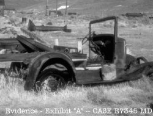

|
Could "Josh" really be Marilyn Manson? | Blood Curdling Screams: A How To Guide | Fame |

 The car used by the film students was found gutted outside the home of Josh D. Saviano's uncle. Small bits of sandwitch were found at the scene. Officials carefully saved these as evidence for the trial that never happened! Why did it take almost an hour for Josh's uncle to realise his nephew and his friends were missing? Was he in a hypnotic sandwitch trance? Was he across the street "visiting" with the crazed Marie Brown? Was he just asleep on his sofa? And why did the trial never happen? Was it a government conspiracy? Was it a coverup? Was the Russian Mafia involved? Or was it because there was no case since all of this was just made up? Perhaps we will never know all the answers. |
© 1999-2003 Super Spoof |
Home